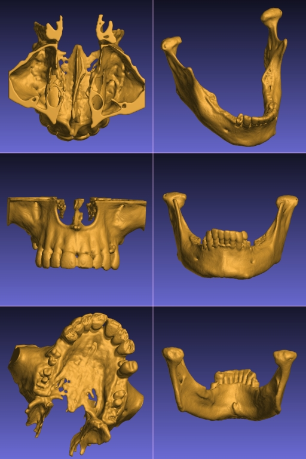
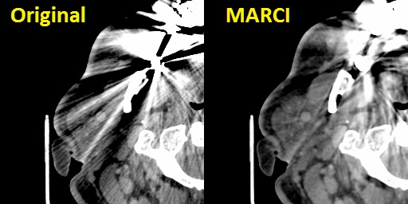
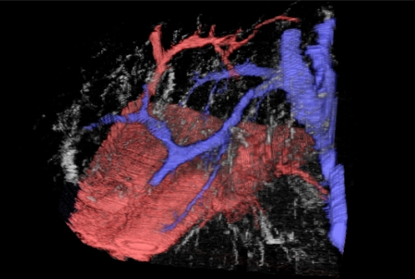
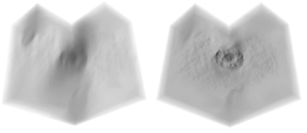

Histo Lab
Home
Our services
Advanced Techniques
How to order
Quality assurance
About us
Privacy policy
Terms and Conditions
|
TadPath Diagnostics
Advanced Techniques
We develop custom advanced algorithms and write our own software to provide truly unique services for cutting edge medical research. Some of our techniques are illustrated above: (Left) Virtual dye casting, (Middle) Metal artefact reduction in CT scans, (Right) 3D printed models derived from a patient's CT imaging. Some details are given below:
- 3D Printed Anatomical Models from Patients' CT Scans - We have developed specialist software and techniques to make high quality clinical grade 3D printed models of a patient's bony anatomy from their CT scans. An example of our physical 3D printed models is shown in the above figure (right) and a YouTube video showing some our models can be viewed here: 3D model video demo. Such models are dimensionally accurate (our quality control procedure ensures that concordance between the physical model and the calibrated CT scan is better than 1 mm). This allows our models to be used for surgical planning, pre-bending titanium plates, medical education, surgical training, etc. Please note: Our models must NOT be used for internal purposes (i.e. any use that puts the model in contact with live patient tissue is prohibited). Thus our models must not be used as implants or intra-operative cutting guides. Below are some examples of the virutal models made from CT scans of a maxilla and a mandible from separate patients.

- Metal Artefact Reduction in CT Scans - We have considerable experience of head and neck work and our 3D modelling processes in this region need to recover high fidelity profiles of bony structures of the jaws. Unfortunately many people have extensive metalwork in their teeth (amalgam fillings, crowns, etc.) which cause severe distortions in CT images due to over-scattering and lack of transmittance of the X-ray beams in the scanner. This results in gross distortions of the reconstructed images (an example is shown in the image at the top of this page - middle, top - and also in the figure below, left). Although many algorithms to reduce such artefact have been published since the mid 1980's we found none of them met out specific needs for reduction of severe (as opposed to only moderate) dental artefacts or others were made for use with specific scanners or required access to the raw scanner data. We rarely get access to raw CT scanner data and we use CT images from a variety of sources supplied to us by our clients. For this reason we developed our own in-house algorithm specially designed to deal with severe dental metalwork-induced artifacts. This is a non-iterative algorithm based on non-linear interpolation and inspired by the Kriging technique used in geosurveying. We call this the MARCI™ algorithm (Metal Artefact Reduction by Constrained Imputation). An example result of applying our MARCI algorithm is shown in the image at the top of this page (middle, bottom) and in the figure below (right). No algorithm can completely remove such severe artefact but our method reveals sufficient hidden detail for us to make good quality 3D models even from severely degraded images. Please note: We do not report CT scans or other radiology studies - we only process images as a service. MARCI algorithm processing is made available for research purposes only because it does not have any regulatory approval for clinical use. Below is a close-up of soft tissue windows from an original CT scan with severe metal artefacts (left) and the result of our MARCI algorithm on the same scan (right) showing not only reduced distortion of the bone profiles (which is what the algorithm was primarily designed for) but the added bonus of increased visibility of soft tissue structures as well.

- 3D Serial Tissue Section Reconstruction - We have over 20 years experience in making high resolution 3D computer models of complex tissue and intracellular microanatomy from serial sections. These sections may be physical histology sections or optical sections using optical sectioning microscopy and 3D deconvolution. We are one of the few centres that can offer 3D deconvolution on bright field microscopy (as opposed to the simpler problem of fluorescence imaging). However, we don't stop at just making the 3D model. We have also developed unique visualisation tools and functional methods such as virtual dye casting. This allows complex microvascular and other connected structures to be traced in 3D in a computer model - without the need to make a physical model or inject the actual tissue (which would be impossible at this microscopic scale anyway). The figure at the top of this page on the left and, in greater detail, the figure below give an example of such dye casting done on liver histology showing the microvascular relationships in the human liver acinus. These are just static shots from a fully interactive virtual 3D model. This was published as: Tadrous, P. J., A. Hall, and A. P. Dhillon. "Advances in multiresolution serial section 3d reconstruction: applications to liver microarchitecutre." The Journal of Pathology 220 (2010): S11.

- Deconvolution of 3D Microscopy Data - As briefly mentioned above we have developed specialist software and methods for recovering high resolution 3D imagery from brightfield microscopy such as (e.g.) to study the 3D structure of chromatin in the interphase nucleus. See, for example:
1. Tadrous, P. J. "A method of PSF generation for 3D brightfield deconvolution." Journal of microscopy 237.2 (2010): 192-199.
2. Tadrous, P. J. "A new 3d microscopy method for enhancing morphological diagnosis and mapping the ‘chromatome’." The Journal of Pathology 220 (2010): S4.
3. Tadrous PJ. Subcellular Microanatomy by 3D Deconvolution Brightfield Microscopy: Method and Analysis Using Human Chromatin in the Interphase Nucleus. Anat Res Int. 2012;2012:848707. doi:10.1155/2012/848707
Our methods will also work with the simpler and more common application of fluorescence microscopy. Below is a 3D visualisation of a through-focus Z-series of a hepatiocyte (nucleus stained with haematoxylin, bright field microscopy). On the left is the original stack. On the right is the result of our bright field deconvolution method applied to that data. The Z-stacks are displayed as a cube with a quarter of the cube cut-away for clarity using our custom visualisation tools. An example video showing a 'fly-into' sequence into a human plasma cell nucleus (actual 3D deconvolved chromatin image data - not a synthetic 3D model) is available via this link: 3D nucleus video

- Advanced Image Processing and Machine Vision - Many medical researchers are familiar with excellent and well-established free tools such as QuPath, NIH ImageJ, etc. for DIY image processing such as cell counting, measuring areas, etc. Although we can do those basics with our software we specialise in custom algorithm development to solve unique research problems such as automated machine vision and task-specific transforms and measurement systems, developing our own new algorithms and writing in-house software to implement them for specific tasks in specific fields of biomedicine. If you have an image processing, analysis or machine vision task that cannot be done using standard software, please get in touch for further information on our bespoke image processing and analysis solutions and consultancy.
|
|